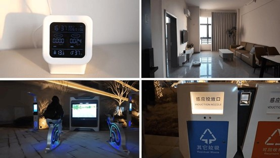
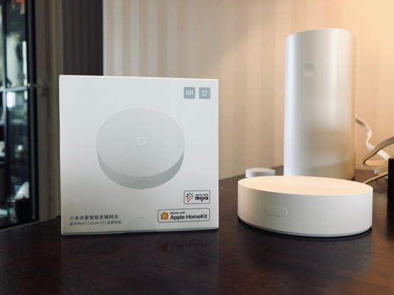
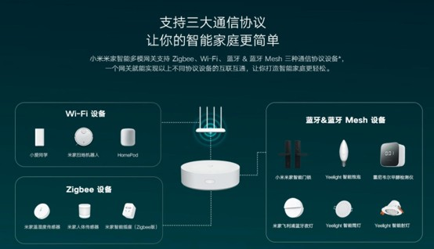
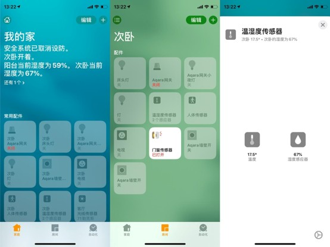
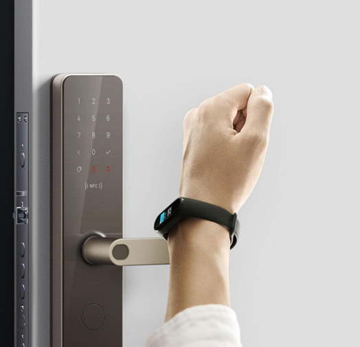
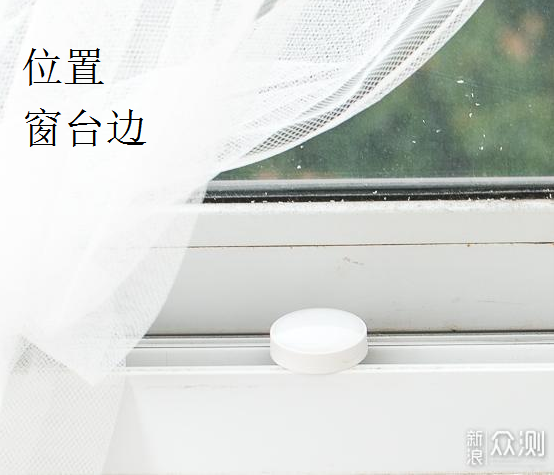
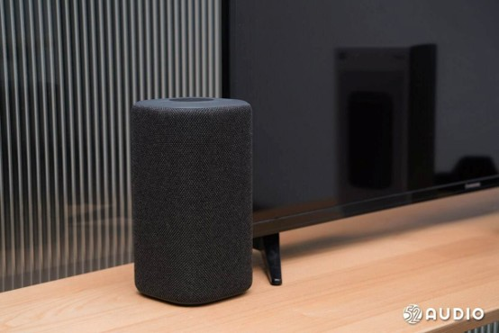

Full IoT Process · 物联网与交互
项目概述
Mixiaoting located in China Sensing Valley, Bengbu consists of 6 buildings with 2,000 talent apartments (single/double/four-person units). It integrates three layers: community public-area IoT, in-unit whole-house IoT and property cloud management platform. Adopting Xiaomi IoT enterprise architecture, it combines local gateway edge computing, Xiaomi public cloud and private property management backend. Communication protocols include Zigbee3.0, BLE Mesh, WiFi, Ethernet and LoRa (for public security).
整体三层物联网硬件架构（感知层-网络层-平台应用层）

图片 6-1
运营前全流程：入住前物联网设备初始化（物业批量部署）
Reserve network cable power supply in the center of each living room to install Xiaomi Multi-mode Gateway 2; wire zero-fire smart switches all over the house; reserve power supply for curtain motor tracks; embed pipelines for kitchen gas solenoid valves.
Deploy floor switches and public LoRa gateways in building weak current shafts; complete wiring for lobby access control and elevators.
Operated by property uniformly, no manual binding for residents. Power on gateways and connect via wired network. The property backend imports room numbers (e.g. Building 1 Room 302, Building 2 Room 501) in batches and binds unique device IDs to each room.
Zigbee sub-devices (sensors, door locks, curtains) access the network in batches, and gateways automatically classify them into corresponding room device groups.

图片 6-2
WiFi home appliances (speakers, air conditioners, washing machines) connect to community Mesh whole-house WiFi uniformly and bind to corresponding unit numbers automatically.

图片 6-3
Pre-set automation scene templates for all unit types (Homecoming, Leaving, Sleep, Morning Wake-up, Security Alarm) on the backend, and push them to each unit gateway for local storage with one click.
Input public access control, elevator and fire equipment into the community main gateway to build mapping relations between buildings and rooms.
Interconnection between Property PMS System and Xiaomi IoT Cloud. Talents complete check-in at the front desk, where staff input names, phone numbers, lease terms and room numbers into the apartment PMS management system.
The PMS system pushes data to Xiaomi IoT enterprise cloud in real time via API interfaces.
The cloud automatically completes three tasks:

图片 6-4
核心场景完整物联网数据流（四个环节：社区通行、室内生活、安全警报、物业运营）
Residents pass the gate via face recognition: Cameras at the perception layer capture facial data, and local verification sends access signals to the community main gateway. The cloud matches the resident's apartment number and sends instructions to call the elevator for the target floor.
Unlock the apartment door with fingerprint or NFC: The lock sends a door-open signal to the indoor multi-mode gateway, and the local "Home Mode" activates immediately.
The entry light brightens gradually, curtains half open, the air conditioner is set to 26°C, and the speaker broadcasts daily weather.
Encrypted device status is uploaded to the cloud, and Mi Home APP as well as the property backend synchronously update logs.

图片 6-5
The gateway triggers at 7:00 and reads data from the windowsill illumination sensor. Curtains fully open under sufficient light and half-open on cloudy days.
Bedroom lights brighten slowly, the air conditioner is adjusted to 24°C, and the speaker plays soft music.
Real-time power consumption data of each unit is uploaded to the property backend for statistics.

图片 6-6
Lift the door handle to lock, and the gateway receives the trigger signal for leaving mode. All lights turn off, curtains close fully, power of non-essential household appliances cuts off, and the sweeping robot starts cleaning.
Door and window sensors enter alert mode; unauthorized opening triggers sound-light alarms and mobile alerts for residents and property staff.
The gas sensor detects excessive methane concentration and transmits data to the gateway via Zigbee. The gateway executes offline emergency operations: cut off the gas valve, turn on the exhaust fan, activate whole-house sound-light alarms, and loop voice warnings.
Alerts are simultaneously pushed to residents' mobile phones, the property big screen and the community fire control room.
Alarms automatically cancel when gas concentration returns to a safe range, and all logs are permanently stored on the cloud.
The speaker captures the voice command "Xiaoai, movie mode" and uploads it to the gateway for parsing. The gateway sends multi-protocol commands: turn off main lights, switch on ambient lights, fully close curtains, and set the air conditioner to 25°C.
Real-time operating status of all devices is synchronized to the Mi Home APP.

图片 6-7
The front-desk PMS system marks the room as vacant and sends commands to Xiaomi IoT Cloud. The cloud clears the original resident's access rights, fingerprint and NFC data on the lock, and restores factory default scene settings of all devices.
The apartment automatically enters the vacant energy-saving mode; the property remotely monitors the online status and faults of all devices.
物业后台物联网运营流程
离线备份运行机制
完整物联网数据流概览
Physical sensors & locks → Zigbee/BLE/WiFi → Indoor multi-mode gateway (local computing)